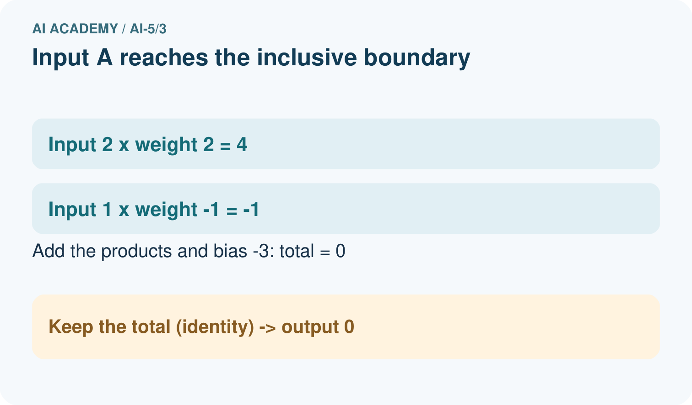
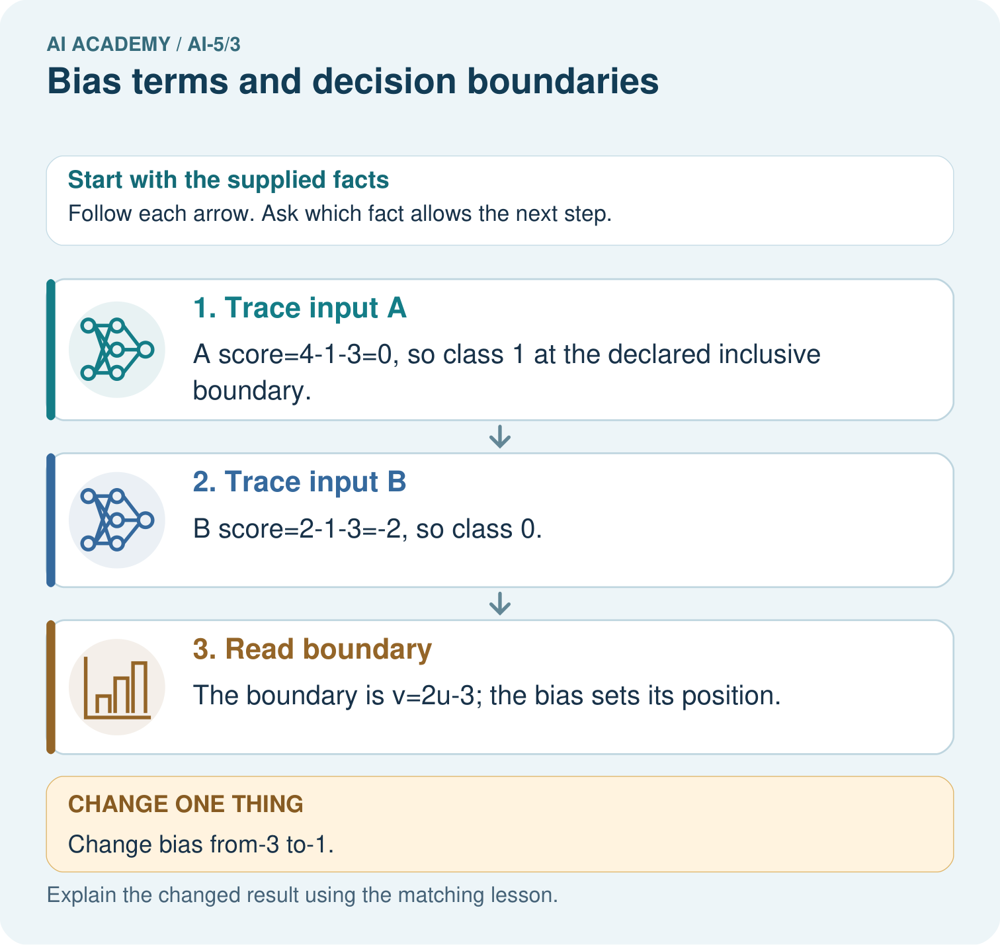

AI Academy · Level 5 · Grade 10 · Week 3 · Workbook
Bias terms and decision boundaries
Learn to understand, design, build, test and explain AI systems responsibly.
Project: Image-pattern Network Investigation
Workbook · 1 of 14
Recall and choose your starting point
Try the recall before opening notes. Then use a different colour or a labelled second line to correct your explanation.
Dot products and weighted sums
Without opening the old lesson, explain one key idea from Dot products and weighted sums. Give an example and a mistake that the idea helps you avoid.
Workbook · 2 of 14
Practise with fading help
Use W2: Plot and label the boundary for Bias terms and decision boundaries. Record the answer once; the lesson and workbook refer to the same attempt.
| Given inputs | Procedure I chose | Middle steps | Result and check |
|---|---|---|---|
Workbook · 3 of 14
Individual reasoning check
Use the worked case for Bias terms and decision boundaries. Proposed explanation: “Add bias to each contribution”. Decide whether this explanation is supported. Point to the step or supplied fact that decides; explain your repair if needed.
Workbook · 4 of 14
Independent transfer case
Independent case: Analyse a new model independently
A new model has w = [-1, 2], b = -2, inputs [u, v] and class 1 when z >= 0. Calculate scores and classes for [2, 1], [2, 2], [2, 3]. Write the boundary as v in terms of u. Then change only b to 0 and recompute [2, 1].
Attempt this case before feedback. Record any help. Earlier examples below are further practice; a case already practised with feedback cannot establish fresh transfer.
Workbook · 5 of 14
W1 Trace the bias once
Use z = 2 times width - height - 3 at [5, 4]. Give the weighted sum, bias, final score and prediction under z >= 0.
Workbook · 6 of 14
W2 Plot and label the boundary
For the worked model, find boundary points at width 2 and width 4. Test [4, 4] and [4, 6] to identify the class on each side.
Workbook · 7 of 14
W3 Check the equality rule
At [3, 3], compare prediction under z >= 0 with prediction under z > 0. Does changing this comparison move the zero line?
Workbook · 8 of 14
W4 Analyse a new model independently
A new model has w = [-1, 2], b = -2, inputs [u, v] and class 1 when z >= 0. Calculate scores and classes for [2, 1], [2, 2], [2, 3]. Write the boundary as v in terms of u. Then change only b to 0 and recompute [2, 1].
Workbook · 9 of 14
W5 Require evidence of improvement
A teammate says that raising b must improve the model because all scores rise. What information is needed before accepting an improvement claim?
Workbook · 10 of 14
Project checkpoint and reflection
Add a labelled bias terms and decision boundaries evidence sheet to Image-pattern Network Investigation. Show how you can calculate a weighted score with a bias term. Use the supplied fictional case and keep its inputs, intermediate steps, calculation or prediction, and limitation. Connect this record to last week’s record; a matching answer without a trace is insufficient.
Workbook · 11 of 14
Feedback, return check and learning record
| Evidence | My record |
|---|---|
| Worked alone / hint / model | |
| First step I repaired and why | |
| New case checked later; date and result | |
| What I can now explain without notes | |
| One remaining question |
Revisit this idea with your teacher after a delay. Familiarity is different from explaining and using it on a changed case.
Workbook · 12 of 14
Pictorial case practice: Bias terms and decision boundaries
Move a toy boundary with a bias while keeping its input weights fixed.
Score z=2u-v-3; predict class 1 when z>=0. InputsA=[2, 1], B=[1, 1].
All inputs and outcomes in this worked example are invented classroom data; no real model run is claimed.


Is B positive under the original or changed model? Point to the relevant step in the picture, then write the changed result and the rule or evidence that supports it.
Support used: alone / hint / worked example. This record is practice evidence.
Project connection: For your Image-pattern Network Investigation, save the input, procedure, observed result and limitation of this check. Label this worked example as practice; use a different, previously unreviewed case when checking independent understanding.
Workbook · 13 of 14
Project portfolio milestone
Project: Image-pattern Network Investigation
Current milestone: Frame the need. Name the user, the problem, allowed inputs and a safe simple starting method.
For your Image-pattern Network Investigation, save the input, procedure, observed result and limitation of this check. Label this worked example as practice; use a different, previously unreviewed case when checking independent understanding.
| Evidence to keep | My record |
|---|---|
| This week’s input and deciding step | |
| Prediction and actual result (or labelled paper trace) | |
| One change since the previous checkpoint and why | |
| One error or limit and the next test |
Workbook · 14 of 14
Supported practice and learning evidence
Use this supported practice once, in the browser or on paper. Keep the reserved independent assessment for a separate first attempt before teacher feedback.
Move a toy boundary with a bias while keeping its input weights fixed.
Practice 1: explain the deciding evidence
Which labelled step matches this detail? The boundary is v=2u-3; the bias sets its position.
1. Trace input A
2. Read boundary
3. Trace input B
Hint if needed: Read the steps in the pictorial case. Match the supplied detail to the stage that performs or records it.
After your attempt, compare with the supported explanation: Read boundary The boundary is v=2u-3; the bias sets its position. The bias adds the same offset after the input contributions. It moves the dividing line without changing the weights that set the line’s orientation. Class 1 includes score zero under our stated rule. That is why B changes class when the bias rises by two: its score moves from minus two onto the included boundary.
Practice 2: explain the deciding evidence
Changed-case practice: Change bias from-3 to-1. Which conclusion is supported by the supplied facts?
1. We can decide the result without examining the changed input or the procedure.
2. This one example guarantees correct results for every future input.
3. A score becomes2 and B score 0; both predict class 1.
Hint if needed: Use the changed condition and the deciding step in the pictorial trace. The answer must say what follows from those facts.
After your attempt, compare with the supported explanation: A score becomes2 and B score 0; both predict class 1. Increasing bias by2 adds2 to every score without changing the weights.
Repair a missing building block
Review Dot products and weighted sums (ai-5/2). Goal: Calculate a dot product by matching feature positions. Short practice: Which connection explains why more right brightness lowers this score? Point to the relevant step in the picture, then write the changed result and the rule or evidence that supports it.. Return to this week and explain what you changed.
Predict, run and debug
The browser lab lets you edit the supported Python examples already included in this lesson. Predict first, run, inspect the actual output or error, change one input, then run again. Keep code, predictions, actual results and a reasoned revision together. On paper, label your result as a trace rather than an execution.
Keep your completed work
Use Download completed work in the hosted lesson to export your answers, reflections, practice feedback and code-run evidence. Open the HTML copy to read or print it. Drafts stay in this browser when storage is available; clear drafts on a shared device.